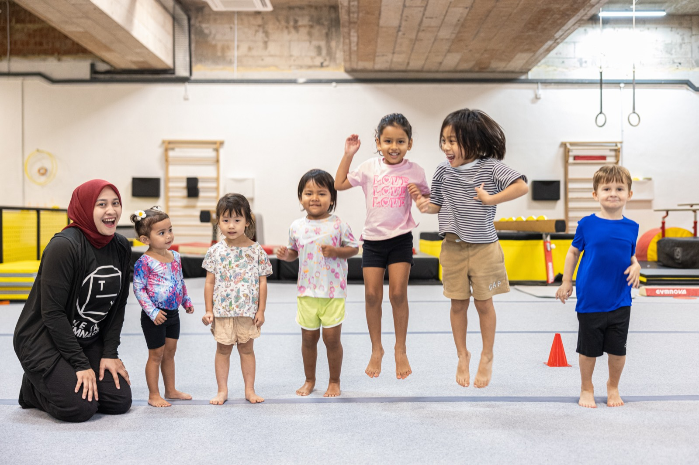

A club your child belongs to.
The Yard is a gymnastics club in Singapore, founded in 2016 by former international gymnast Rosanna Trigg and now four centres strong: Jurong, Bukit Timah, Dempsey and Dover. Families who train with us join as members of the club, and every class at every centre runs on the same four pillars: move, play, grow and belong.
- Founded 2016 · Singapore
- Founder Rosanna Trigg · thirty years on the floor
- Centres Jurong · Bukit Timah · Dempsey · Dover
- Pillars Move · Play · Grow · Belong

Thirty years
on the floor.
Rosanna Trigg competed internationally and has coached for three decades, in the UK, in Mexico and, for most of that time, here in Singapore, where The Yard's coaching goes back thirty years. She founded Gym With Me in 2010 and The Yard in 2016, and she still coaches the High Performance squad, which is where she is happiest.
One studio became four centres, the most recent being the 17,500 square foot Olympic-grade arena at Jurong that opened in November 2025. The mission has stayed the same through all of it, and it is written down.
Around her is a coaching team drawn from around the world, and every one of them, on the floor and at the front desk, works to the same four pillars: move, play, belong and grow.
Progress is the promise,
and the pace belongs to the child.
Every class, level and assessment at The Yard sits on six principles about how children get good at things. They hold at all four centres and with every coach, which is what makes a Level 3 at Dover a Level 3 at Jurong.
Progress is the promise
Every child progresses: some fast, some slowly, some in fits and starts. A coach who keeps a child at a level for an extra term is investing in the depth that makes the next level stick.
Character progresses too
The child who could not stand a missed skill last term and can now hold focus through one has made real progress, and coaches credit it. We teach gymnastics, and what we develop is character.
Foundations before sophistication
A child can be taught a back handspring before the strength and shape are there to support it. We choose the slower path of shapes, conditioning and a robust handstand first, which means fewer plateaus later and fewer injuries.
The edge, with the strain kept out
A good Yard class keeps each child working on something just beyond what they can do reliably. That takes a coach who knows every child's current edge, which is why classes stay small enough to know it.
Plateaus are part of progression
Every child hits flat stretches, and most come just before a step change. We keep the structure, keep the conditioning and let the breakthrough arrive, and a coach calls every level move when the skills are reliably there.
The exit is part of the design
Most children will never compete, and that is fine by us. A child who leaves The Yard strong, coordinated and confident has had a successful time here, whatever sport comes next.
How each pillar
reaches your child.
The pillars are written through three lenses: how we work as a team, how we work with your child, and what it gives your family and the community. A principle that works in only one of them is incomplete.
Move
Children learn a cartwheel by doing cartwheels, with feedback, many times over, on FIG-certified apparatus. Progress is built from reps, and the coach's job is to make the next rep slightly better than the last.
Play
A class children enjoy is a class they return to and try harder in, so fun is designed into every session: the pace, the game with the skill hidden inside it, and the way a fall is handled.
Belong
Every child is on their own path and we meet them where they are. Around that path is a club: friendships, events, a shared identity, and a team that knows your child's name, the sibling, and the injury from last term.
Grow
Every setback is a lesson in how to handle a setback, and what the coach does in the thirty seconds after a fall is the curriculum. Members tell us their child comes home more capable, more resilient and more themselves.
One club,
four centres.
From one gym in 2016 to four centres across Singapore, each with its own personality: Jurong, the High-Performance Arena; Bukit Timah, the Ninja Hub; Dempsey, the Scenic Studio; and Dover, the All-Rounder. The pathway, the coaching standard and the four pillars are the same at all four.
Perennial Business City17,500 sq ft arena · hosts the Lion City Classic and Diamond Classic
KAP MallNinja rig · party room · adult foundation class
Dempsey HillHeritage setting · ninja · boys' classes · free parking
SPGGWarriors and Senior Warriors · boys' classes · freestyle camps
Coaches from
around the world.
Coaches come to The Yard from around the world and from Singapore, many with international competitive backgrounds across USAG, FIG and SGLP programmes, and several as former competitive athletes. All of them, and everyone at the front desk, work to the same four pillars, and you can meet them on the leadership and coaches pages.
Qualified and current
Every coach holds coaching qualifications appropriate to the apparatus and level taught, current first-aid certification, and ongoing training in safeguarding and duty of care to children.
Rigorously screened
Every coach is interviewed, reference-checked and screened before joining, and The Yard continuously reviews its standards for technical instruction, child safety and class delivery.
Always on the floor
Every class is supervised by a qualified coach, from recreational and competitive sessions through to the self-directed Adult Open Session, and the coach is on the floor before the class starts.

Rosanna Trigg
Owner and founder, and competitive specialist for the High Performance squad.
The leadership team
A head coach for each competitive discipline, a head coach at every centre, centre managers, and a Safeguarding Lead who oversees child safety across all four centres.
One coaching team, four centres
Specialists across competitive, recreational, MAG, ninja, freestyle and choreography, delivering award-winning programmes at every centre.
Coach assignments change with the term. For who is coaching at your centre this term, ask the centre team.
A safeguarding-led club
from the first class.
Child safety underpins everything we do, and it stands outside every other rule in the club. The Yard follows the Safe Sport Singapore framework, a Safeguarding Lead oversees child safety across all four centres, and every member of staff completes safeguarding training on induction and keeps it current.
Screened before the floor
Face-to-face interviews with safety-focused questions, two professional reference checks, identity, criminal record and working-with-children checks, and qualification verification for every hire.
Visible to parents
Every centre has a parent viewing area, every centre is nut-free, and a signed liability waiver comes before first participation.

Come and watch a class.
The quickest way to understand The Yard is to watch one class from the viewing area. Book a trial at any centre, the fee is shown at booking, and your child's coach recommends the right level from the first session.